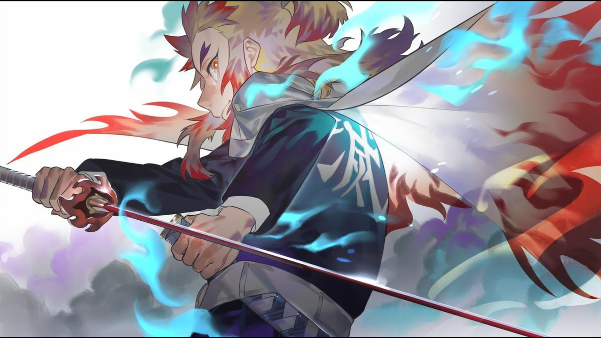

Wikitaku
Inicio
Demon Slayer es una historia creada por Koyoharu Gotoge, siendo publicada en 2016 y teniendo un estreno en el terreno del anime en abril de 2019, logrando sorprender con su primera temporada, la cual acaba de finalizar y que vale la pena destacar porque es tan primordial no perderle la pista.

La historia esta cronológicamente ubicada durante la era de Taisho, que duró de 1912 a 1926, aquí el protagonista es Tanjirou Kamado, un chico que para mantener a su familia se dedica a vender carbón, desafortunadamente un día al regresar del trabajo descubre que su familia fue atacada y asesinada por un demonio, mientras lamenta la muerte de su familia descubre que su hermana Nezuko tiene posibilidades de sobrevivir, para su mala sorpresa se ha convertido en un demonio, pero aún hay esperanza pues gracias a que se encuentra con un asesino de demonios llamado Giyu Tomioka, descubren que Nezuko aún tiene recuerdos sobre Tanjirou y su familia, lo cual hace que esta no ataque a su hermano.
Tomioka le recomienda a nuestro héroe buscar al
responsable de la muerte de su familia, convirtiéndose
en un asesino de demonios, nuestro protagonista acepta
prometiendo venganza y encontrar una cura para
su hermana.
Así es como comienza el camino del héroe para Tanjirou,
en principio suena al típico shonen con los
clichés que este género acostumbra a tener, pero
episodio tras episodio descubrirán como poco a poco,
esta historia brilla con luz propia.
Inicialmente hay
que destacar que el anime no da descanso,
constantemente atraviesa por situaciones interesantes,
emotivas y sobre todo llenas de acción,
mejorando conforme la historia avanza. La trama muestra
congruencia desde que inicia, cada detalle está
muy bien cuidado, se explican la importancia de los
asesinos de demonios y la amenaza que estos
villanos representan. Cada personaje que aparece tiene
una buena construcción y desarrollo, se le da
su importancia, apareciendo en el momento indicado y
brillando cuando la situación lo amerita.
Temporadas
Si bien el manga ya esta terminado, el anime aun continua
en emision y con futuras temporadas por venir.
En esta pagina me dedicare solamente a resumir e
introducir lo que se ha emitido, anunciando tambien las
buenas nuevas que vienen.
Poner trailers en cada temporada asi como imagen poster.
- - Temporada 1
Nombre de la temporada y tambien cambiar la imagen por una mas acorde a la temporada.
 - -
Esta parte del anime es un poco dificil de explicar.
Esto se debe a que al momento de su lanzamiento se hizo en forma de pelicula, pero luego se saco una version de la misma en forma de spot T.V., con el fin de mostrar escenas que no salieron en la pelicula, ayudando asi tambien a dar una mayor duración de esta.Poner algun trailer que encuentre en internet. en forma de iframe o de video descargado.
- - Arco del distrito rojo.
- - Arco de la villa de los herreros.